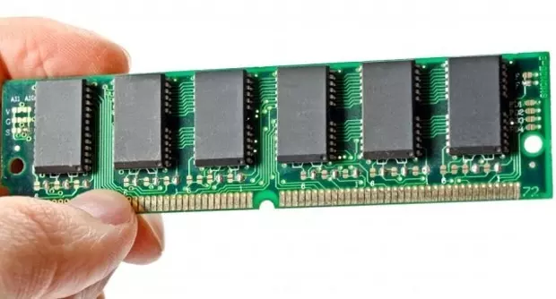
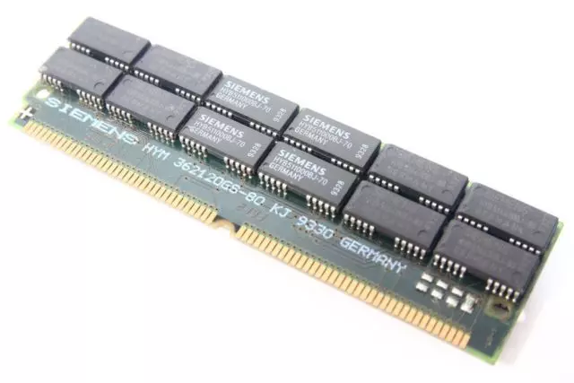
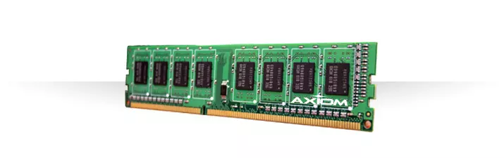
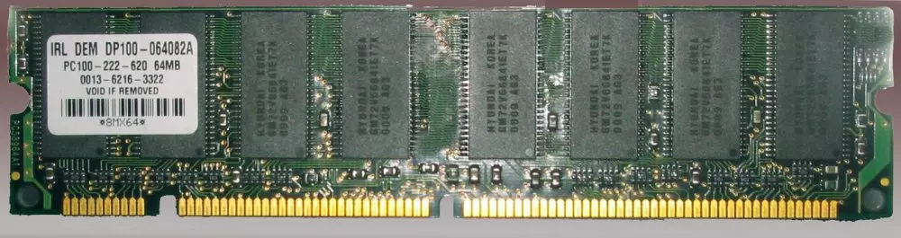
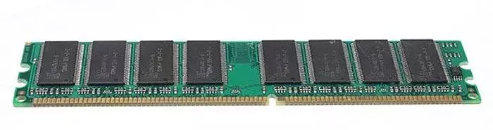
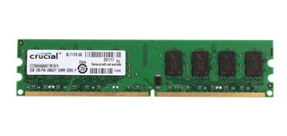
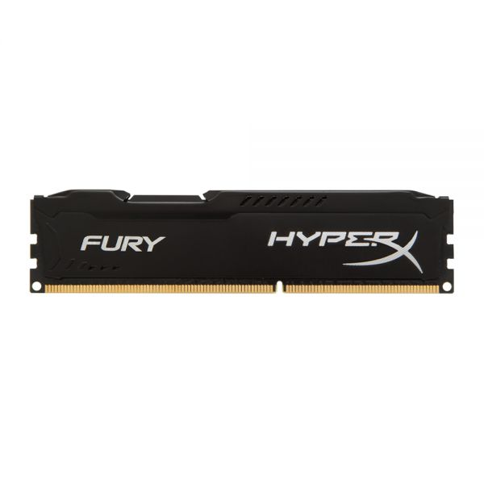
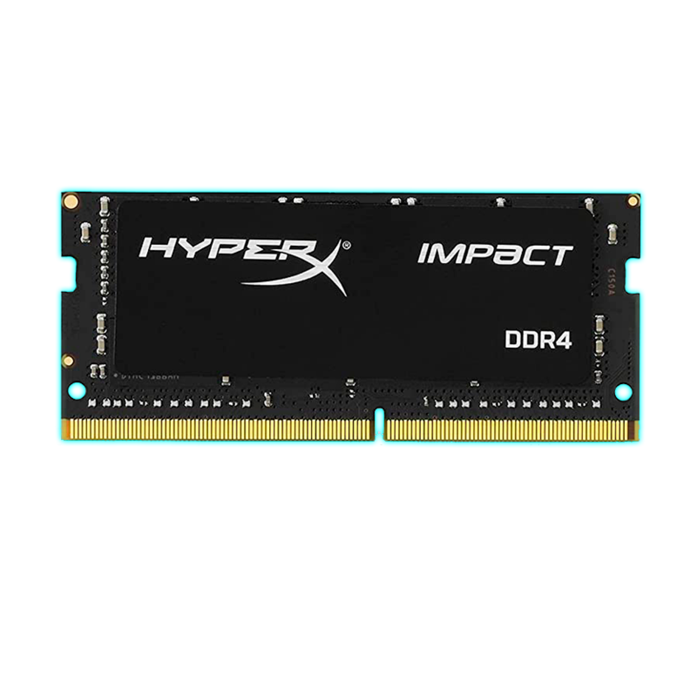
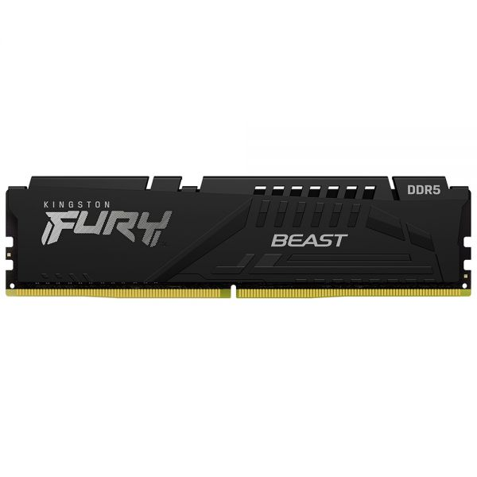

Memoria RAM
La memoria RAM es el componente de un dispositivo electrónico que se encarga de almacenar los datos e instrucciones de forma temporal. Por lo que cuando el dispositivo se apaga, los datos se borran. Este componente cuenta con una máxima velocidad durante la transmisión de la información. Además, para lograr un funcionamiento rápido y efectivo hay que tener en cuenta el procesador. La memoria RAM y el procesador se complementan para proporcionar en todo momento un buen funcionamiento del dispositivo. Por lo que la RAM sirve para poder utilizar varias aplicaciones de forma simultánea, es decir, a la vez. Es muy importante contar con una memoria RAM de alta capacidad para que pueda almacenar una gran cantidad de programas y aplicaciones mientras se usan. De este modo, el funcionamiento del ordenador no se verá afectado
Funcionamiento
Para considerar un correcto funcionamiento de la memoria RAM, es necesario que todas sus partes estén en óptimo estado. Esta importante pieza se divide principalmente en cinco partes. A continuación, vamos a conocer cada una de ellas y a entender cómo afectan el funcionamiento de la memoria RAM.
Plca de Componentes
Esta es la parte de la memoria RAM que soporta a todos los demás componentes y pistas eléctricas que comunican cada parte. Cada una de esas placas de componentes son las que cuentan con diferentes tamaños de almacenamiento. Recuerda que mientras mayor sea la capacidad, el funcionamiento de la memoria RAM será más ágil.
Bancos de Memoria
Los bancos de memoria están compuestos por los chips de circuitos integrados que se encuentran dentro y permiten formar celdas de almacenamiento. Básicamente, estos elementos de la memoria RAM permiten almacenar la información en forma de bits. Como bien mencionamos, la retención de la memoria RAM es provisional y, para que esto sea posible, es necesario una corriente eléctrica constante. Es por ello que, al apagar la computadora, los bancos de memoria dejan de almacenar y se pierde la información
Reloj
Este es un componente muy importante para el funcionamiento de la memoria RAM, sobre todo, en las más nuevas. Este reloj interno permite sincronizar la memoria RAM con el procesador de la computadora. De esta manera, se logran mejorar los tiempos de acceso y la comunicación entre ambos complementos de la computadora.
Chip SPD
Este chip es el encargado de almacenar todos los datos relacionados al módulo de la memoria RAM. Son pequeños y, usualmente, se ubican en la parte central de la memoria RAM. Su función principal es que el dispositivo, ya sea una computadora o laptop, reconozca si la memoria RAM instalada permite la ejecución de los programas.
Bus de conexion
El bus de conexión es la linea de color amarillo que suele estar ubicado en la parte posterior de la memoria RAM. Su función es asegurar que el funcionamiento de la memoria RAM y el de la placa base estén sincronizados. Gracias a esto, siempre será posible ampliar la capacidad de una memoria RAM, añadiendo un módulo nuevo a la placa base.

Tipos de RAM
Static RAM (SRAM)
Se trata de uno de los dos tipos básicos de memoria (el otro es DRAM, del que hablaremos a continuación). Comenzó a utilizarse en 1990 y a día de hoy sigue presente en cámaras digitales, routers o impresoras, pero también en la memoria caché de los procesadores o de los discos duros. Es un tipo de memoria que necesita un flujo de energía constante para funcionar, así que al contrario que la RAM dinámica, no necesita estar «refrescándose» para ver qué datos tiene en su interior, y por eso se le llama Static RAM (RAM estática)
Las ventajas de este tipo de memoria es que consume muy poca energía y tiene unos tiempos de acceso muy bajos. Las desventajas incluyen que tienen unas capacidades muy bajas, y unos costes de fabricación bastante elevados.s
Dynamic RAM (DRAM)
Es el otro tipo básico de memoria RAM, y se utilizó desde principio de los años 1970 hasta mediados de los años 90. Este tipo de memoria necesita un «refresco» periódico de los datos en su interior porque tienen condensadores que periódicamente se van descargando, y la falta de energía significa pérdida de datos. Por eso se le llama RAM dinámica.
La ventaja de este tipo de memoria es que era más barata de fabricar, y permitía mayores capacidades. Las desventajas, es que tienen unos tiempos de acceso más elevados y consumen más energía. En la década de los 90, se desarrollo la memoria tipo EDO DRAM (Extended Data Out Dynamic RAM), seguido por su evolución, la memoria BEDO DRAM (Burst EDO DRAM), con mejores relaciones de consumo y menos costes de fabricación. Sin embargo, este tipo de tecnología quedó obsoleta en favor de la memoria SDRAM.
Synchronous Dynamic RAM (SDRAM)
Este tipo de memoria funciona en sincronía con el procesador, lo que significa que espera a la señal de reloj antes de responder, teniendo como beneficio que permitía al procesador ejecutar órdenes en paralelo. En otras palabras, con este tipo de memoria se puede aceptar una orden de lectura antes de haber terminado de procesar una de escritura. Este proceso, conocido como «pipelining», no afecta al tiempo que se tarda en procesar instrucciones, sino que da la posibilidad de ejecutar varias simultáneamente.
Este tipo de memoria se utiliza desde 1993 hasta día de hoy, tanto en ordenadores como en videoconsolas, y casi todos los siguientes tipos de memoria RAM están basados en este tipo.
Single Data Rate Synchronous Dynamic RAM (SDR SDRAM)
Es un tipo de memoria que vio la luz en 1993 y se sigue utilizando a día de hoy. Es una variante mejorada de la memoria SDRAM que mejora la manera en la que procesa la información de lectura y escritura. «Single Data Rate» significa que se ejecuta una instrucción de lectura y otra de escritura por cada ciclo de reloj del procesador.
Double Data Rate Synchronous Dynamic RAM (DDR SDRAM)
Este tipo de memoria RAM seguro que ya os suena más, puesto que es el tipo de memoria que se estandarizó a partir del año 2000, y a partir de aquí surgieron las siguientes generaciones: DDR2, DDR4 y las actuales DDR4. Opera de la misma manera que la SDR SDRAM solo que el doble de rápido, es decir, es capaz de realizar dos instrucciones de lectura y dos de escritura por cada ciclo de reloj del procesador. Aunque es una versión mejorada de la SDR SDRAM, tiene diferencias físicas pues se amplía el número de pines de 168 a 184. Este tipo de memoria también opera a diferente voltaje (2.5V frente a los 3.3V de la SDR DRAM).
Dentro de este tipo de memoria, encontramos como decíamos hace un momento distintas versiones, además de la «DDR» a secas:
DDR2 SDRAM
Mantiene el mismo número de operaciones por ciclo de reloj (dos de lectura y dos de escritura), es más rápida porque es capaz de funcionar a mayores velocidades. Las DDR funcionaban a 200 Mhz, mientras que las DDR2 lo hacían a 533 Mhz, con un menor voltaje (1.8V) y más pines (240).
DDR3 SDRAM
Múltiples mejoras respecto a las DDR2, que incluyen más velocidad, capacidad, menor consumo (1.5V) y mayor velocidad de funcionamiento (800 Mhz). Aunque tiene el mismo número de pines que la DDR2, estos aspectos hacen que no sean compatibles.
DDR4 SDRAM
Mejora de nuevo el rendimiento sobre la DDR3 con mayores velocidades (1600 Mhz), capacidades y funcionan a menor voltaje (1.2V). Este tipo de SDRAM usa 288 pines, así que tampoco es compatible con los anteriores.
DDR5 SDRAM
Mejora la velocidad de la DDR4 SDRAM permitiendo mayores velocidades y por primera vez la memoria DDR soporta ahora dos canales simultáneos por módulo DIMM.
